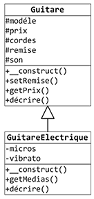
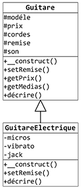
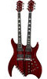
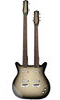
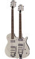
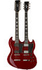
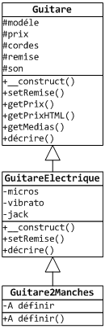
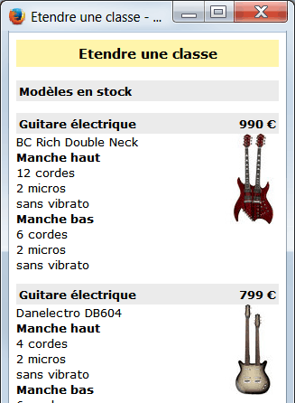

Il est possible de modifier le comportement de la classe mère en redéfinissant
ou en en surchargeant ses méthodes dans la classe fille.
S'il existe une différence théorique entre la redéfinition et la surcharge , les deux aboutissent
finalement au même résultat : une méthode de la classe mère est réécrite dans la
classe fille.
La méthode de la classe mére est masquée par sa nouvelle définition dans la classe fille. Il est
pourtant toujours possible d'invoquer la méthode originale de la classe mère, en
préfixant cet appel avec le mot-clé parent et l'opérateur de résolution de portée ::.
Redéfinition de méthode
On dit qu'une méthode est redéfinie quand elle a la même signature dans
la classe mère et dans la classe fille. Les 2 méthodes ont donc le même nombre d'arguments et
ces arguments sont du même type.

Comme vous avez pu le remarquer dans notre exemple, la méthode decrire() est
incompléte pour les guitares électriques car elle ne donne pas d'information sur le nombre de
micros et la présence ou non d'un vibrato. Cette méthode va donc être redéfinie dans la classe
fille GuitareElectrique pour afficher ces éléments.
On pourrait aussi réécrire la méthode en faisant d'abord appel à celle de la classe
parent, puis en ajoutant l'affichage des informations propres aux guitares électriques.
Surcharge de méthode
On dit qu'une méthode est surchargée quand elle n'a pas la même signature
dans la classe mère et dans la classe fille. Les 2 méthodes ont donc un nombre d'arguments
différents, ou des types d'arguments différents, ou à la fois un nombre et des types d'arguments
différents.
A titre d'exemple, nous allons surcharger la méthode setRemise() qui permet de
définir un taux de remise pour le prix d'une guitare. Il a été décidé que pour les guitares
électriques, on pouvait avoir non seulement une remise, mais également une paire de cables (des
jacks) offerte. On va réécrire la méthode setRemise() dans la classe fille pour
qu'elle accepte et traite maintenant 2 paramètres : un taux de remise et la valeur en euros
d'une paire de jacks. On modifiera aussi la méthode decrire() pour afficher cette
offre éventuelle.
Reprise de l'exemple

L'affichage des médias étant un plus, il a été décidé qu'il devait être généralisé à toutes les
guitares. On va donc le déplacer de la classe fille dans la classe mère. On y est obligé car il
n'est pas possible à une classe mère d'atteindre les membres d'une fille (il n'y pas de mot-clé
child comme il y a un mot-clé parent).
Cette modification du code des 2 classes n'a aucune influence sur le code "externe" qui
les utilise puisque grâce à l'héritage c'est le moteur PHP qui invoquera la méthode
correctement. A remarquer qu'il est important que le code des classes soit mis dans des fichiers
séparés de ceux contenant le code qui les utilise car les modifications en sont d'autant plus
simplifiées. Pour rappel, si ça n'est pas fait dans les exemples c'est uniquement par souci de
simplification.
La méthode decrire() est légérement modifiée pour afficher également les médias associés
à l'objet.
Exercice : Etendre une classe
Nous avons décidé d'étendre la vente de guitares aux guitares électriques double manches.
Nous trouverons dans notre catalogue les modèles suivants :
Modéle
Prix
Manche haut
Manche bas
BC Rich Double Neck
990 €
12 cordes 2 micros Sans vibrato
6 cordes 2 micros Sans vibrato

Danelectro DB604
799 €
4 cordes 2 micros Sans vibrato
6 cordes 2 micros Sans vibrato

Gretsch G5566 Jet
1329 €
6 cordes 2 micros Avec vibrato
6 cordes 2 micros Avec vibrato

Harley Benton 612
498 €
12 cordes 2 micros Sans vibrato
6 cordes 2 micros Sans vibrato

Etendez la classe GuitareElectrique avec la classe Guitare2Manches pour gérer les guitares
doubles manches. Le constructeur de la classe reçoit un tableau contenant les valeurs pour
initialiser les attributs. Pour simplifier, on considére que les valeurs sont correctes et on ne
fait pas de validation dans le constructeur. La méthode decrire() doit afficher les
informations sur les 2 manches.


Créez une classe Stock responsable de l'instanciation de ces guitares. Les instances des
guitares seront gardées dans un tableau. Le constructeur de la classe Stock ira chercher les
informations sur les guitares dans le fichier texte dont le nom lui sera passé en paramètre.
Le fichier stock/guitares2manches.txt contient les informations pour les
instanciations des guitares :